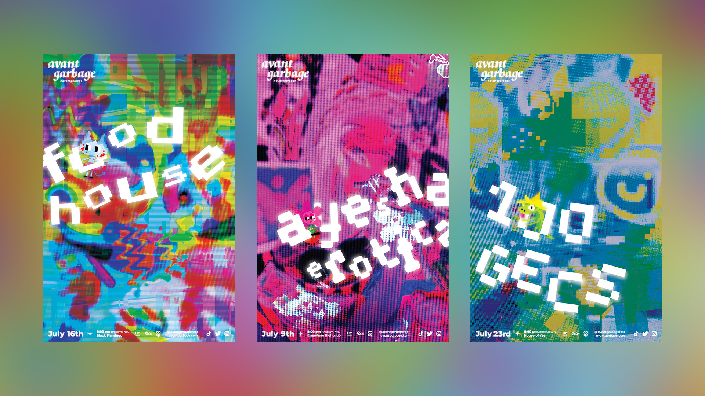
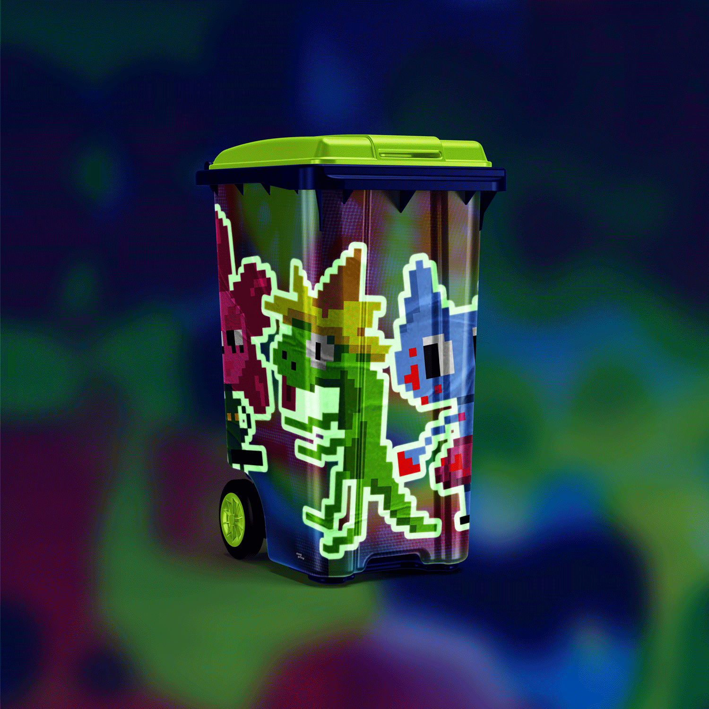
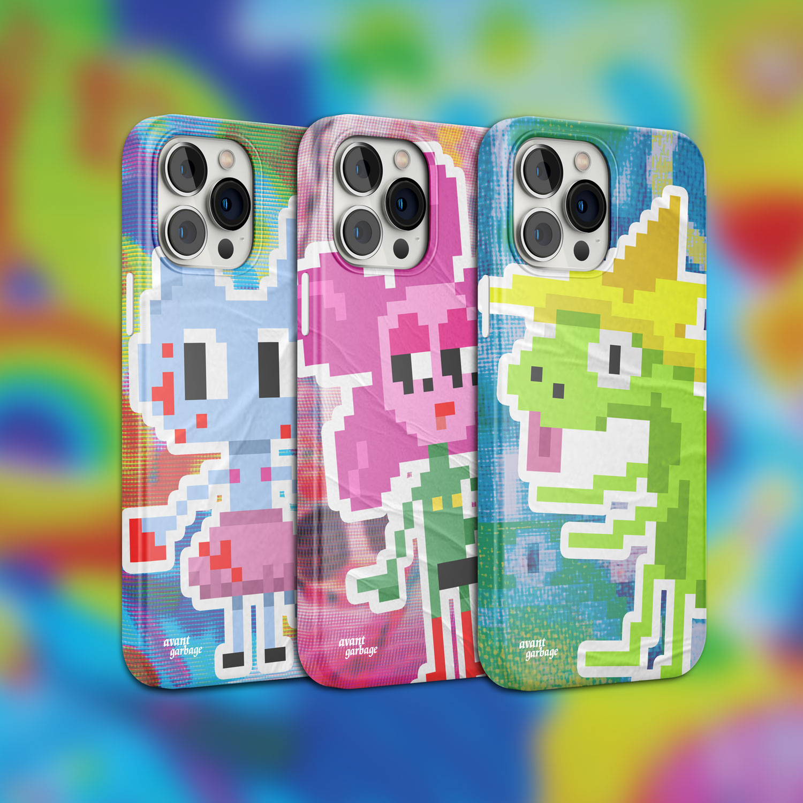
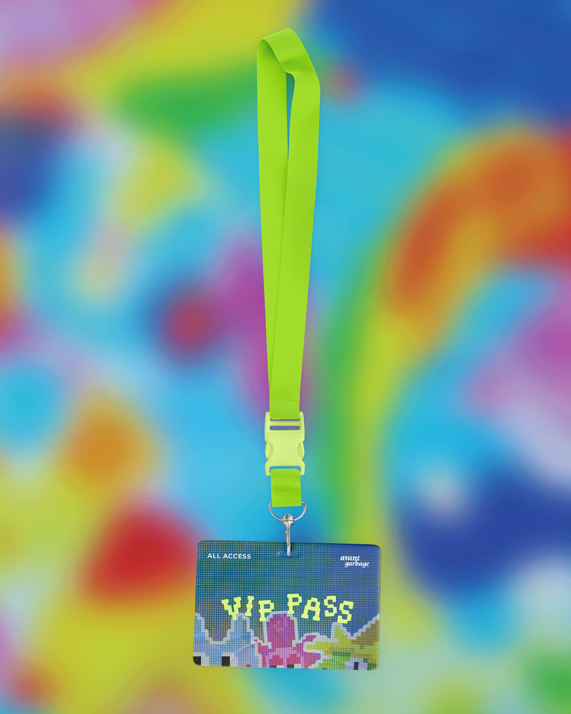
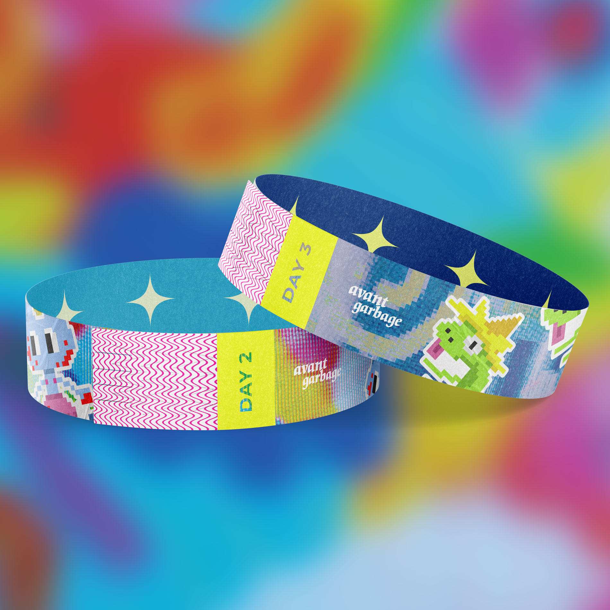

Avant-Garbage music festival is the festival that doesn’t take itself too seriously. The festival is perfect for hyperpop fans and clubkids that want a loud, colourful, and queer-friendly place to have fun and party. Be your truest, trashiest self and let loose. Each poster captures the chaotic, digital sound that all the artists share while the different collages capture their unique voices. Each poster features a mascot character to represent the individual artists.